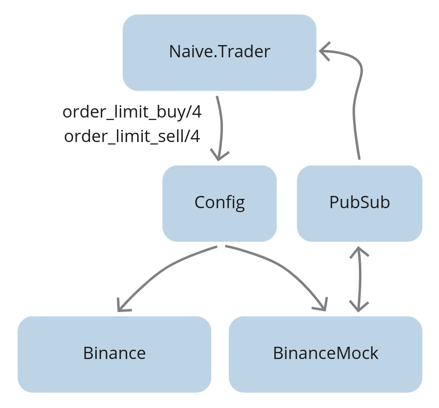

Before closing this side panel, please consider donating to keep this book freely available:
DONATE VIA GITHUBBUY ON GUMROAD
Follow me on:
Chapter 4 Mock the Binance API
4.1 Objectives
- design the binance mock application
- create a new app
- implement getting exchange info
- implement placing buy and sell orders
- implement callback for incoming trade events
- upgrade trader and config
- test the implementation
4.2 Design
First, let’s start with the current state:

Currently, our trader is using the Binance module to place buy/sell
orders and get exchange info.
The get_exchange_info/0 function doesn’t require a Binance account as it’s publicly available information so we can call the Binance lib directly from our module.
The remaining ones(buying/selling) require a Binance account and some coins/tokens inside its wallet. We need to mock those inside our module.
We will update the trader to fetch the Binance’s module name from the config:

We will set up a config so it points to the Binance client to be used - either Binance or BinanceMock. Regards the BinanceMock itself it will have the same interface as the Binance module. It will need to store both buy and sell orders and it will allow us to retrieve them. That will cover the REST functions but Binance also streams back trade events for those orders as they get filled, that’s why BinanceMock will also need to broadcast fake events to the “TRADE_EVENTS:#{symbol}” PubSub topic so the trader will pick them up:

When exactly should we broadcast those fake trade events? Well, the best thing
that we can do is make the BinanceMock process subscribe to the trade events stream and try to broadcast fake trade events whenever the price of orders would be matched:

Starting from the arrow on the left, our naive strategy will place an order at the current price. In this hypotetical scenario, the price raised for a moment after placing the buy order, so BinanceMock will keep on waiting until a trade event will get broadcasted from the PubSub with a price below the buy order’s price. At that moment BinanceMock will generate a fake trade event and broadcast it to the same PubSub topic. The trader will get that event and assume that it came from the Binance and that the buy order got filled so it will place a sell order. Similar to the buy order, BinanceMock will keep on waiting until a trade event will get broadcasted from the PubSub with the price above the sell order’s price. At that moment BinanceMock will generate a fake trade event and broadcast it to the same PubSub topic.
Enough theory for now, let’s get our hands dirty with some coding.
4.3 Create “BinanceMock” app
We will start by creating a new supervised app called BinanceMock:
$ cd apps
$ mix new binance_mock --supThe next step will be to update the BinanceMock module to be a GenServer.
We will utilize:
- the
Decimalmodule for comparing the prices - the
Loggermodule to log
As well as we will define internal %State{} struct that will hold:
- map called
order_booksfor each traded symbol - list of symbols that mock subscribed to
- last generated id - for consistent generating of unique ids for fake trade events
order_books map will consist of :"#{symbol} => %OrderBook{}. We will define the %OrderBook{} struct as 3 lists buy_side, sell_side and historical:
# /apps/binance_mock/lib/binance_mock.ex
defmodule BinanceMock do
use GenServer
alias Decimal, as: D
require Logger
defmodule State do
defstruct order_books: %{}, subscriptions: [], fake_order_id: 1
end
defmodule OrderBook do
defstruct buy_side: [], sell_side: [], historical: []
end
def start_link(_args) do
GenServer.start_link(__MODULE__, nil, name: __MODULE__)
end
def init(_args) do
{:ok, %State{}}
end
end4.4 Implement getting exchange info
As it was mentioned before, to retrieve exchange info we can just call Binance’s function directly as its publicly available information:
# /apps/binance_mock/lib/binance_mock.ex
def get_exchange_info do
Binance.get_exchange_info()
end4.5 Implement placing buy and sell orders
For buy and sell limit orders we will write a helper function as the logic is the same for both order sides:
# /apps/binance_mock/lib/binance_mock.ex
def order_limit_buy(symbol, quantity, price, "GTC") do
order_limit(symbol, quantity, price, "BUY")
end
def order_limit_sell(symbol, quantity, price, "GTC") do
order_limit(symbol, quantity, price, "SELL")
endThe “order_limit” helper function will:
- generate a fake order based on symbol, quantity, price, and side
- cast a message to the BinanceMock process to add the fake order
- return with a tuple with
%OrderResponse{}struct to be consistent with the Binance module:
# /apps/binance_mock/lib/binance_mock.ex
defp order_limit(symbol, quantity, price, side) do
%Binance.Order{} =
fake_order =
generate_fake_order(
symbol,
quantity,
price,
side
)
GenServer.cast(
__MODULE__,
{:add_order, fake_order}
)
{:ok, convert_order_to_order_response(fake_order)}
endWe can now move on to implementing the handle_cast/2 callback to :add_order to the order book for the symbol from the order.
It needs to subscribe to the TRADE_EVENTS:#{symbol} topic for the symbol from the order and add the order to the correct order book:
# /apps/binance_mock/lib/binance_mock.ex
def handle_cast(
{:add_order, %Binance.Order{symbol: symbol} = order},
%State{
order_books: order_books,
subscriptions: subscriptions
} = state
) do
new_subscriptions = subscribe_to_topic(symbol, subscriptions)
updated_order_books = add_order(order, order_books)
{
:noreply,
%{
state
| order_books: updated_order_books,
subscriptions: new_subscriptions
}
}
endWe will start with the implementation of the subscribe_to_topic/2 function. We need to make sure that the symbol is uppercased as well as check have we already subscribed to that topic. Otherwise, we can safely use the PubSub module to subscribe to the TRADE_EVENTS:#{symbol} topic for this symbol.
We need to remember to append the symbol to the list of subscription and return the updated list:
# /apps/binance_mock/lib/binance_mock.ex
defp subscribe_to_topic(symbol, subscriptions) do
symbol = String.upcase(symbol)
stream_name = "TRADE_EVENTS:#{symbol}"
case Enum.member?(subscriptions, symbol) do
false ->
Logger.debug("BinanceMock subscribing to #{stream_name}")
Phoenix.PubSub.subscribe(
Streamer.PubSub,
stream_name
)
[symbol | subscriptions]
_ ->
subscriptions
end
endNext, time for implementation of the add_order function. First, we need to get the order book for the symbol of the order. Depends on the side of the order we will update either the buy_side or sell_side list remembering that both sides are sorted. We are sorting them so we can easily grab all orders that should be filled whenever trade event arrived, this will become clearer as we will write a handle callback for incoming trade events:
# /apps/binance_mock/lib/binance_mock.ex
defp add_order(
%Binance.Order{symbol: symbol} = order,
order_books
) do
order_book =
Map.get(
order_books,
:"#{symbol}",
%OrderBook{}
)
order_book =
if order.side == "SELL" do
Map.replace!(
order_book,
:sell_side,
[order | order_book.sell_side]
|> Enum.sort(&D.lt?(&1.price, &2.price))
)
else
Map.replace!(
order_book,
:buy_side,
[order | order_book.buy_side]
|> Enum.sort(&D.gt?(&1.price, &2.price))
)
end
Map.put(order_books, :"#{symbol}", order_book)
endNow we need to follow up and implement the functions that we referred to
previously - those are generate_fake_order and convert_order_to_order_response.
Starting with the generate_fake_orders, it’s a function that takes a symbol, quantity, price, and side and based on those values returns a Binance.Order struct. To return the struct we will need to generate a unique id for each faked order - this is where fake_order_id will be used(callback implemented later). This way we will be able to run tests multiple times using the BinanceMock and always get the same ids:
# /apps/binance_mock/lib/binance_mock.ex
defp generate_fake_order(symbol, quantity, price, side)
when is_binary(symbol) and
is_binary(quantity) and
is_binary(price) and
(side == "BUY" or side == "SELL") do
current_timestamp = :os.system_time(:millisecond)
order_id = GenServer.call(__MODULE__, :generate_id)
client_order_id = :crypto.hash(:md5, "#{order_id}") |> Base.encode16()
Binance.Order.new(%{
symbol: symbol,
order_id: order_id,
client_order_id: client_order_id,
price: price,
orig_qty: quantity,
executed_qty: "0.00000000",
cummulative_quote_qty: "0.00000000",
status: "NEW",
time_in_force: "GTC",
type: "LIMIT",
side: side,
stop_price: "0.00000000",
iceberg_qty: "0.00000000",
time: current_timestamp,
update_time: current_timestamp,
is_working: true
})
endWe can now focus on converting the Binance.Order to the Binance.OrderResponse struct. As Binance.Order struct contains almost all of the same fields that the Binance.OrderResponse struct, we can use struct function without exclamation mark to ignore all additional fields. The only field that has a different name is transact_time field which is called time in the Binance.Order struct - we can fix that separately:
# /apps/binance_mock/lib/binance_mock.ex
defp convert_order_to_order_response(%Binance.Order{} = order) do
%{
struct(
Binance.OrderResponse,
order |> Map.to_list()
)
| transact_time: order.time
}
endThe last function to finish support for placing buy and sell orders is to add a callback that will iterate the fake order id and return it:
# /apps/binance_mock/lib/binance_mock.ex
def handle_call(
:generate_id,
_from,
%State{fake_order_id: id} = state
) do
{:reply, id + 1, %{state | fake_order_id: id + 1}}
end4.6 Implement order retrival
We can now move on to retrieving the orders. First, we need to add an interface function that will call our BinanceMock GenServer:
# /apps/binance_mock/lib/binance_mock.ex
def get_order(symbol, time, order_id) do
GenServer.call(
__MODULE__,
{:get_order, symbol, time, order_id}
)
endThe callback itself is pretty straightforward. We will need to get an order book for the passed symbol. As we don’t know the order’s side, we will concat all 3 lists(buy_side, sell_side, and historical) and try to find an order that will match passed symbol, time, and order_id:
# /apps/binance_mock/lib/binance_mock.ex
def handle_call(
{:get_order, symbol, time, order_id},
_from,
%State{order_books: order_books} = state
) do
order_book =
Map.get(
order_books,
:"#{symbol}",
%OrderBook{}
)
result =
(order_book.buy_side ++
order_book.sell_side ++
order_book.historical)
|> Enum.find(
&(&1.symbol == symbol and
&1.time == time and
&1.order_id == order_id)
)
{:reply, {:ok, result}, state}
end4.7 Implement callback for incoming trade events
Finally, we need to handle incoming trade events(streamed from the PubSub topic). We need to implement a callback that will:
- get the order book for the symbol from the trade event
- use the
take_while/2function on the buy orders with prices that are greater than the current price - we can update their status to filled. - use the
take_while/2function again, this time to sell orders with prices less than the current price, we will also update their statuses to filled. - concat both lists of filled orders, convert them to trade events, and broadcast them to the PubSub’s TRADE_EVENTS topic.
- remove the filled orders from buy and sell lists and put them into the historical list.
Here we can clearly see the benefit of sorting the lists, we can use functions like take_while/2 and drop/2 instead of filter/2
and reject/2(later ones will go through whole lists which could become a bottleneck when multiple open orders would be active):
# /apps/binance_mock/lib/binance_mock.ex
def handle_info(
%Streamer.Binance.TradeEvent{} = trade_event,
%{order_books: order_books} = state
) do
order_book =
Map.get(
order_books,
:"#{trade_event.symbol}",
%OrderBook{}
)
filled_buy_orders =
order_book.buy_side
|> Enum.take_while(&D.lt?(trade_event.price, &1.price))
|> Enum.map(&Map.replace!(&1, :status, "FILLED"))
filled_sell_orders =
order_book.sell_side
|> Enum.take_while(&D.gt?(trade_event.price, &1.price))
|> Enum.map(&Map.replace!(&1, :status, "FILLED"))
(filled_buy_orders ++ filled_sell_orders)
|> Enum.map(&convert_order_to_event(&1, trade_event.event_time))
|> Enum.each(&broadcast_trade_event/1)
remaining_buy_orders =
order_book.buy_side
|> Enum.drop(length(filled_buy_orders))
remaining_sell_orders =
order_book.sell_side
|> Enum.drop(length(filled_sell_orders))
order_books =
Map.replace!(
order_books,
:"#{trade_event.symbol}",
%{
buy_side: remaining_buy_orders,
sell_side: remaining_sell_orders,
historical:
filled_buy_orders ++
filled_sell_orders ++
order_book.historical
}
)
{:noreply, %{state | order_books: order_books}}
endInside the callback we referred to two new functions that we will implement now(convert_order_to_event and broadcast_trade_event).
Starting with the convert_order_to_event function, it will simply return a new Streamer.Binance.TradeEvent struct filled with data. An interesting thing to observe here is that again all values are predictable and function will return the same values for the same input - this will become beneficial for backtesting over and over again and comparing the behavior between runs:
# /apps/binance_mock/lib/binance_mock.ex
defp convert_order_to_event(%Binance.Order{} = order, time) do
%Streamer.Binance.TradeEvent{
event_type: order.type,
event_time: time - 1,
symbol: order.symbol,
trade_id: Integer.floor_div(time, 1000),
price: order.price,
quantity: order.orig_qty,
buyer_order_id: order.order_id,
seller_order_id: order.order_id,
trade_time: time - 1,
buyer_market_maker: false
}
endBroadcasting trade events to PubSub will be the last function that will finish
the implementation of BinanceMock for now. It’s safe to assume that the incoming
symbol will be uppercased as it comes from the exchange (the symbol is part of the topic name which is case-sensitive):
# /apps/binance_mock/lib/binance_mock.ex
defp broadcast_trade_event(%Streamer.Binance.TradeEvent{} = trade_event) do
Phoenix.PubSub.broadcast(
Streamer.PubSub,
"TRADE_EVENTS:#{trade_event.symbol}",
trade_event
)
endThat finishes the BinanceMock implementation. Now, we need to add it to
the children list of the application so it starts automatically:
# /apps/binance_mock/lib/binance_mock/application.ex
...
def start(_type, _args) do
children = [
{BinanceMock, []}
]
...
end
end4.8 Upgrade trader and config
We can move on to the Naive.Trader module where we will add an attribute that will point to the Binance client dictated by config:
# /apps/naive/lib/naive/trader.ex
@binance_client Application.compile_env(:naive, :binance_client)We need to replace all direct calls to the Binance module for calls to the @binance_client attribute inside the Naive.Trader:
# /apps/naive/lib/naive/trader.ex
...
@binance_client.order_limit_buy(
...
@binance_client.order_limit_sell
...
@binance_client.get_exchange_info()
...As the Naive.Trader is now relying on the config to specify which Binance client should they use, we need to add it to the config:
# /config/config.exs
config :naive,
binance_client: BinanceMockThe last modification to our system will be to modify the mix.exs of the binance_mock app to list all deps required for it to work:
# /apps/binance_mock/mix.exs
...
defp deps do
[
{:binance, "~> 1.0"},
{:decimal, "~> 2.0"},
{:phoenix_pubsub, "~> 2.0"},
{:streamer, in_umbrella: true}
]
end
...We also add :binance_mock to the list of deps of the naive app(as the Naive app will use either Binance or BinanceMock to “trade”):
# /apps/naive/mix.exs
...
defp deps do
[
...
{:binance_mock, in_umbrella: true}
...
]
end
...4.9 Test the implementation
We can now see the BinanceMock in action. First, we will start an iex session and double-check that the BinanceMock process is alive.
$ iex -S mix
...
iex(1)> Process.whereis(BinanceMock)
#PID<0.320.0> # <- confirms that BinanceMock process is alive
iex(2)> Streamer.start_streaming("xrpusdt")
{:ok, #PID<0.332.0>}
iex(3)> Naive.Trader.start_link(
%{symbol: "XRPUSDT", profit_interval: "-0.001"}
)
00:19:39.232 [info] Initializing new trader for XRPUSDT
{:ok, #PID<0.318.0>}
00:19:40.826 [info] Placing BUY order for XRPUSDT @ 0.29520000, quantity: 100
00:19:44.569 [info] Buy order filled, placing SELL order for XRPUSDT @ 0.29549),
quantity: 100.0
00:20:09.391 [info] Trade finished, trader will now exitAs config already points to it so we can continue as previously by starting the streaming and trading on the symbol. The trader is using the BinanceMock and it looks like everything works as it would be dealing with a real exchange.
[Note] Please remember to run the mix format to keep things nice and tidy.
Source code for this chapter can be found at Github